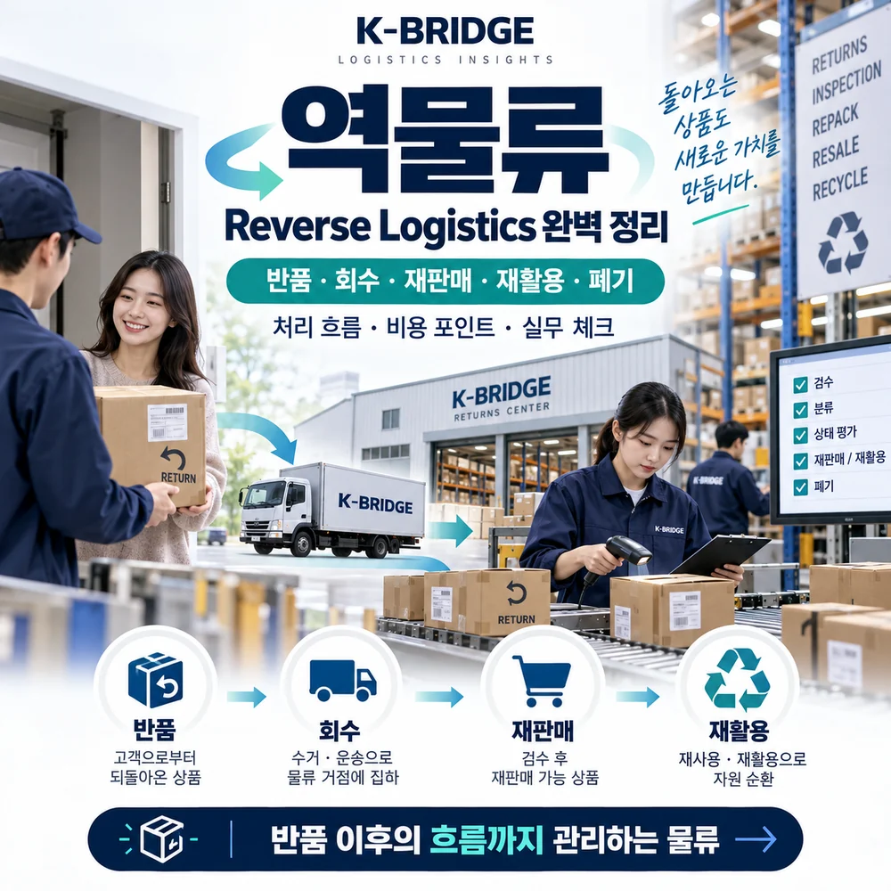
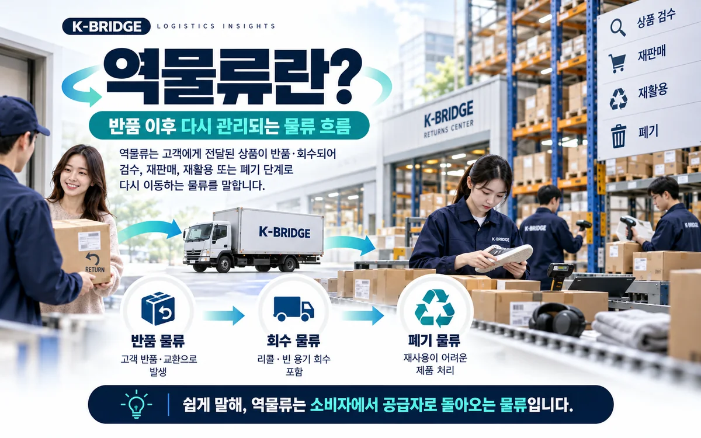
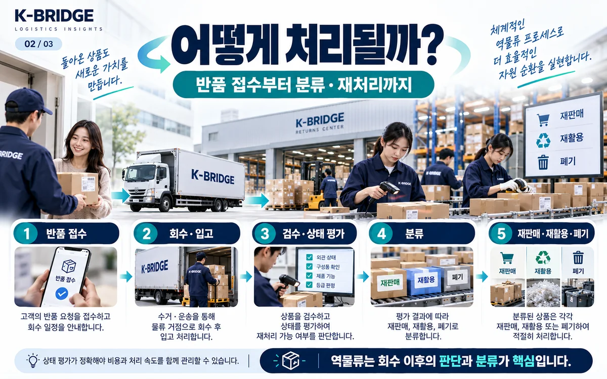
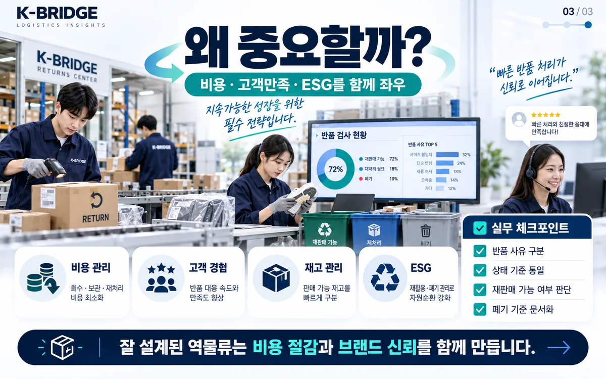

핵심 요약
역물류는 판매·배송된 상품이나 포장재가 고객에게서 다시 판매자·물류센터·제조사로 돌아오는 과정입니다. 중요한 것은 단순 회수가 아니라 상태 검수 후 가장 적합한 처리 경로를 결정하는 일입니다. 정상재고 복귀, 수리·재포장, 재판매, 재활용 또는 폐기로 나뉩니다.
고객이 반품을 요청하면, 물류는 끝난 걸까요?
아닙니다. 고객에게 보낸 상품이 되돌아오는 순간부터 새로운 물류 업무가 시작됩니다.
온라인 쇼핑몰의 사이즈 교환, 파손된 제품의 회수, 제조사 리콜, 빈 용기 회수 모두 역물류(Reverse Logistics)의 사례입니다. 일반적인 출고는 목적지·수량·납기를 미리 계획할 수 있지만, 반품은 언제 어떤 상태로 돌아올지 예측하기 어렵습니다.

반품된 상품은 창고에 도착한 뒤 어떻게 처리하나요?
접수 · 회수 지시
주문번호, SKU, 반품 사유, 수량, 회수주소와 포장상태를 확인합니다. 반품 승인과 택배 회수는 별개의 상태로 추적합니다.
반품 전용 위치에 입고
회수 운송장을 스캔하고 실제 수량·외관·구성품을 확인합니다. 미검수 제품은 정상 판매재고와 물리적·전산상으로 구분합니다.
상태 검수와 처리 등급
정상 재판매 가능, 재포장 필요, 수리 가능, 회수 부품 활용, 재활용 또는 폐기 등으로 분류합니다. 식품·의약품·위험물 등은 별도 법규와 안전 기준을 우선합니다.
재입고 · 재판매 · 재활용 · 폐기
최종 처리 결과를 주문·재고·정산 기록에 연결합니다. 폐기나 재활용을 위탁했다면 적정 처리 증빙을 보관합니다.
반품물류, 회수물류, 폐기물류는 어떻게 다를까요?
| 구분 | 대표 상황 | 확인할 사항 |
|---|---|---|
| 반품물류 | 고객 변심·불량으로 상품 반환 | 환불·교환 상태, 재판매 가능성 |
| 회수물류 | 리콜, 빈 용기·장비 회수 | 회수 대상 추적, 수거율, 안전 |
| 폐기·재활용 물류 | 파손품·사용불가품·포장재 처리 | 분리보관, 적법한 위탁·기록 |
서로 완전히 분리된 업무는 아닙니다. 반품으로 회수한 화물이 검수 후 폐기·재활용 단계로 넘어가는 경우도 있습니다.

반품 운송비만 계산하면 실제 비용이 맞을까요?
역물류의 총비용은 회수 운임뿐 아니라 검수·분류·보관·재포장·재출고·폐기 비용까지 봐야 합니다. 고객이 반품 배송비를 부담하더라도 사업자가 처리하는 작업비와 재고 가치 하락은 남을 수 있습니다.
반품률만큼 중요한 지표는 처리 리드타임, 정상재고 복귀율, 재판매 회수금액, 폐기율입니다. 2026년에는 상태 판정·처리경로 결정에 자동화와 데이터 분석을 적용하는 사례도 확대되고 있습니다. 다만 자동 판단 결과도 실제 검수기준과 소비자 보호·개인정보 처리 규정에 맞아야 합니다. 회수 시간을 단축하고 재고를 정확히 나누면 불필요한 보관·재구매를 줄이는 데 도움이 됩니다.
해외 수출품이 다시 돌아올 때는 무엇이 달라지나요?
해외 바이어가 반품한 화물은 일반 국내 반품과 다르게 수출 이력과 재수입 절차도 확인해야 합니다. 원래 수출했던 물품인지 식별할 수 있는 서류, 반품 사유, 수리 여부, 계약조건, 인보이스·포장명세서, 운송 조건을 정리하는 것이 출발점입니다.
담당자가 회수 전 확인할 다섯 가지
- 회수 사유: 단순 변심·불량·리콜 중 무엇인지, 판매자가 승인했는지
- 화물 정보: SKU·시리얼·수량·포장상태와 회수 운송장
- 검수 기준: 재판매/수리/폐기 등급과 승인 책임자
- 재고 상태: 정상재고와 격리재고의 위치·시스템 구분
- 정산·증빙: 처리비·환불·재입고·폐기 증명과 개인정보 삭제 여부

KEY TAKEAWAYS
핵심 포인트
- 역물류는 반품 운송만이 아니라 회수 후 가치와 안전을 판단하는 업무입니다.
- 검수 전에는 정상재고와 분리하고 상태·처리결과를 기록해야 합니다.
- 회수운임 외 검수·재포장·보관·폐기 등 총비용을 함께 계산해야 합니다.
자주 묻는 질문
Q. 역물류와 일반 물류는 어떻게 다른가요?
일반 물류가 공급자에서 고객에게 제품을 보내는 흐름이라면 역물류는 고객이나 판매처에서 제품·포장재를 회수해 검사하고 다시 판매·수리·재활용 또는 폐기하는 흐름입니다.
Q. 반품 화물은 창고에 도착하면 바로 재고로 잡나요?
아닙니다. 제품 상태와 구성품·유통기한·사용 흔적·시리얼 등을 검수하고 판매 가능 여부를 결정한 뒤 정상재고와 구분해 등록해야 합니다.
Q. 반품비에는 어떤 비용이 포함되나요?
회수운송비 외에 접수·분류·검수·재포장·임시보관·재입고 또는 폐기 비용과 재판매 손실이 발생할 수 있습니다.
Q. 수출한 제품을 다시 국내로 들여오면 무조건 면세인가요?
아닙니다. 재수입 면세 여부는 물품 동일성, 수출 당시 상태, 재수입 사유와 증빙, 관련 법령상 요건 등에 따라 달라집니다. 관세사에게 개별 검토를 요청해야 합니다.
Q. 불량품을 모두 폐기해야 하나요?
아닙니다. 안전과 법규를 충족한다면 수리·재포장·재판매·부품 회수·재활용 등을 검토할 수 있습니다. 폐기해야 하는 물품은 적정 절차와 기록이 필요합니다.
NEXT STEP
이 글과 함께 보면 좋은 자료
반품 회수부터 창고·운송까지 함께 검토하세요
회수 물량, 품목, 검수 수준, 재고처리 기준을 알려주시면 K-BRIDGE가 회수운송과 보관·재출고 흐름을 함께 검토합니다.